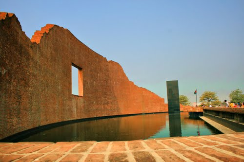
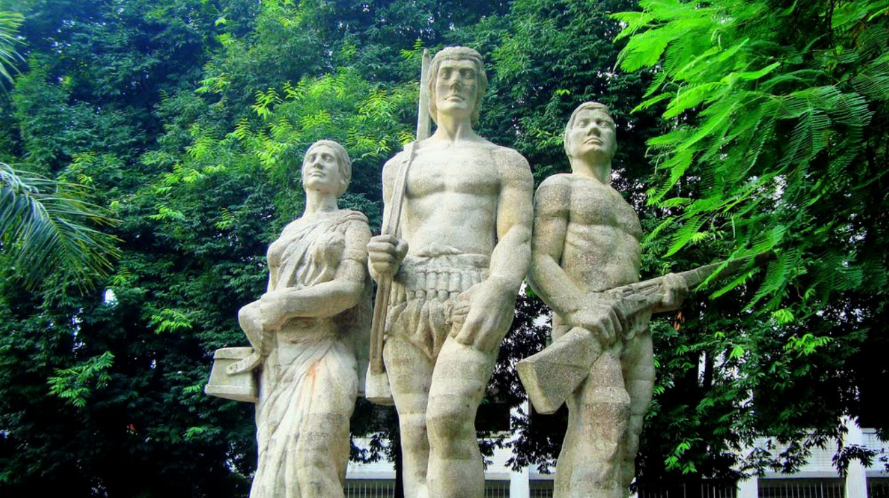

Our monuments stand still making us proud for the sacrifice and heroic achievements of our ancestors. Most of these monuments are planned by the best designers and architects of Bangladesh. Deep beneath the stoned concrete and layer of bricks, there lies the passion and dedication of our hardworking people — people who can go further beyond imagination to make their pride immortal.
A day trip inside the Dhaka city may suffice for a grand tour for the architectural wonders. To visit places outside of the Dhaka city you would need a proper planning. Better if you plan your trip with including few other places of interest. Here’s a list of places you may not want to miss:
Jatiyo Sriti Shoudho or National Martyrs’ Memorial is the national monument of Bangladesh is the symbol in the memory of the valour and the sacrifice of all those who gave their lives in the Bangladesh Liberation War of 1971, which brought independence and separated Bangladesh from Pakistan. The monument is located in Savar, about 35 km north-west of the capital, Dhaka. It was designed by Syed Mainul Hossain.
in the Bangladesh Liberation War of 1971, which brought independence and separated Bangladesh from Pakistan. The monument is located in Savar, about 35 km north-west of the capital, Dhaka. It was designed by Syed Mainul Hossain.
To reach Jatiyo Smriti Soudho, it will take a one or two hours of drive from any part of Dhaka city. You can even adjust this trip with your trip to the pottery village of Dhamrai.
The Shaheed Minar is a national monument in Dhaka, Bangladesh, established to commemorate those killed during the Bengali Language Movement demonstrations of 1952. The Language Movement gained momentum, and after a long struggle, Bengali was given equal status with Urdu. To commemorate the dead, the Shaheed Minar was designed and built by Hamidur Rahman, a Bangladeshi sculptor.
The Language Movement gained momentum, and after a long struggle, Bengali was given equal status with Urdu. To commemorate the dead, the Shaheed Minar was designed and built by Hamidur Rahman, a Bangladeshi sculptor.
A taxi or three wheeler ride will take you to this place within hour from any part of Dhaka city.
Martyred Intellectuals Memorial is a memorial built in memory of the martyred intellectuals of Bangladesh Liberation War. The memorial, located at Rayerbazar, Mohammadpur Thana in Dhaka, was designed by architect Farid U Ahmed and Jami Al Shafi. The initial proposal for a memorial at Rayer Bazar was brought forward by Projonmo 71 (organization of the children of the martyrs of liberation war), who also laid a temporary foundation stone in 1991.
During the entire duration of Bangladesh Liberation War of 1971, a large number of teachers, doctors, engineers, poets and writers were systematically massacred by Pakistan Army and their local collaborators, most notably the alleged Islamist militia groups Al-Badr and Al-Shams.
The largest number of assassinations took place on December 14, 1971, only two days before the surrender of Pakistan army to the joint force of Indian army and Mukti bahini.
Aparajeyo Bangla (Bengali: অপরাজেয় বাংলা) is one of the most well known sculptures dedicated to the Bangladesh Liberation War in 1971. It is located in the campus of Dhaka University, just in front to the Arts Building. In Bengali, the phrase means “Unvanquished Bengal”. The sculpture work was started at the end of 1973 based on sculptor Abdullah Khaled’s design and superintendence of the DUCSU Authority.
The Dainik Bangla news reporter Shaleah Chowdhury came to visit the sculpture and wrote an article about it. The article illuminated the people of Bangladesh, so the sculptor is known all over the world.
Before Aparajeyo Bangla there was another 3 feet long sculpture, then Dackshu Authority broke down the sculpture and started to work on Aparajeyo Bangla project.
In August 1975 Sheikh Mujibur Rahman was murdered so the Dackshu Authority stopped the Aparajeyo Bangla project. In January 1979 the Dackshu Authority again started the project and in December 1979 the project work was done.